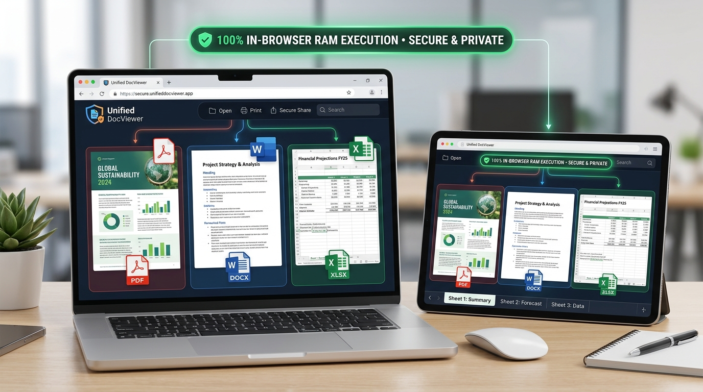

How to Read PDF, Word (DOCX) & Excel (XLSX) Online Free (Zero Uploads)
Executive Takeaways
- Zero Cloud Uploads: Documents never leave your device. Binary parsing happens strictly inside local browser memory via WebAssembly and JavaScript engines.
- Universal Triple Format: Seamlessly preview PDF documents, Microsoft Word (.docx) files, and Excel spreadsheets (.xlsx, .csv) in one lightweight reader.
- No Software Installs: Eliminates the need for expensive Microsoft 365 subscriptions, Adobe Acrobat Pro licenses, or Google Drive cloud uploads.

Step-by-Step Document Reader Guide
100% In-BrowserSelect or Drop Any Document
Drag and drop any PDF, Word document (.docx), or Excel spreadsheet (.xlsx, .csv) into the Document Reader workspace.
Automatic Format Engine Detection
The client-side inspector identifies the container format and initializes the appropriate WebAssembly parser in browser RAM without server calls.
Navigate, Zoom & Print
Browse multi-page PDFs, inspect Word formatting, switch Excel sheet tabs, zoom up to 300%, enter fullscreen, or print directly.
1. The Problem with Modern Cloud Document Viewers
In enterprise settings, law firms, and personal finance, documents frequently contain confidential information: contracts, proprietary financial projections, medical health records, and private identity details. When you upload a file to a conventional online reader or free converter, you entrust your sensitive data to unknown third-party cloud servers.
Furthermore, opening documents on public kiosks, work machines without licensed software, or personal Chromebooks often triggers frustrating barriers: expired Microsoft Office product keys, forced cloud logins, or aggressive monthly subscription paywalls. LocalDoc resolves both challenges with a zero-upload in-browser document reader.
2. How LocalDoc Parses PDF, Word, and Excel in Browser Memory
Rather than sending your binary files across the internet to a server farm, LocalDoc runs compiled JavaScript and WebAssembly engines directly within your web browser's physical RAM sandbox:
- PDF Engine (PDF.js): Mozilla's HTML5 Canvas rasterization engine decodes vector paths, text characters, and embedded bitmaps locally, producing sharp rendering at 100%, 150%, and 200% zoom levels.
- Word Engine (Mammoth): Extracts semantic XML paragraph hierarchies from the OpenXML `.docx` zip package and renders clean HTML typography with exact heading styles and list structures. For format conversion, you can also use our PDF to Word and Word to PDF tools.
- Excel Engine (SheetJS): Unzips the spreadsheet workbook, evaluates formula cells, builds responsive HTML data tables with sticky column headers, and creates clickable sheet tabs at the bottom. You can also export spreadsheets using Excel to PDF.
3. Technical Comparison Matrix
| Feature / Capability | Cloud Readers (Google Docs / Office 365) | LocalDoc Universal Reader |
|---|---|---|
| Server Data Uploads | Required (Full file transmitted over network) | Zero (100% In-Browser RAM) |
| Account / Login Required | Yes (Google / Microsoft Account) | No Account Required |
| Offline Support | Requires active internet sync | 100% Offline PWA Capable |
| Multi-Format Handling | Requires different apps / web tabs | Unified PDF, Word & Excel Viewer |
| Privacy & Air-Gap Compliance | Fails HIPAA / GDPR strict air-gapping | Complies with Air-Gapped Security |
4. Frequently Asked Questions
Can I read password-protected PDFs?
Yes. If your PDF is encrypted, the in-browser reader will prompt you to enter the password locally. The decryption key is processed entirely within your browser session and never sent to any server.
Does the Excel viewer support multiple sheet tabs?
Yes. When an Excel workbook contains multiple worksheets (e.g. "Q1 Summary", "Expenses", "Forecast"), responsive sheet tab buttons appear along the bottom of the viewer, allowing you to toggle between sheets instantly.
Can I install the reader as a standalone desktop program?
Yes. Click the "Install PC App" button in the header of LocalDoc to install the suite as a standalone Progressive Web App (PWA) on Windows, macOS, or Linux for instant offline access.